Missões do dia
Treino do dia, água, abdômen e o desafio da semana. Cumpra todas e ganhe bônus de XP.
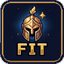
FIT.AI Jogar agora[ SISTEMA ] · Treino RPG com Coach de IA
Escolha seu mestre, ganhe XP a cada série e evolua de Recruta a Imortal. Um coach de IA monta o seu treino e acompanha cada repetição.
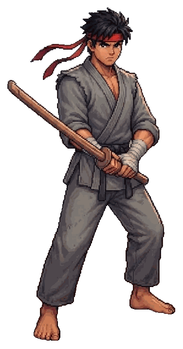
Ninguém precisa de motivação todo dia. Precisa só de mais um treino. O FIT.AI transforma cada um deles em XP, cartas e conquistas.
Como funciona
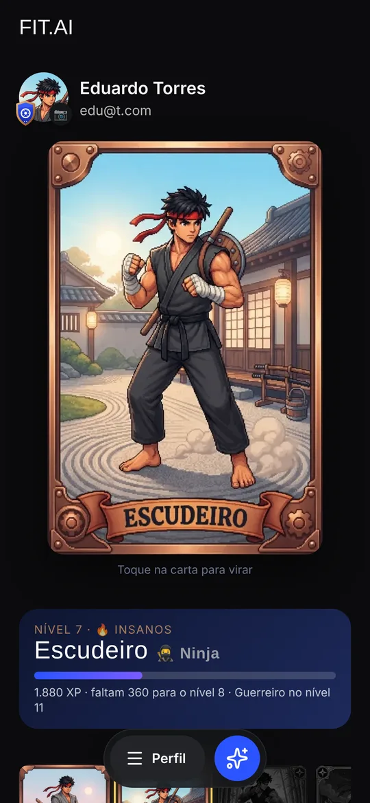
Um quiz rápido define seu objetivo e seu nível. No fim, você recebe a ficha de atleta (força, agilidade, resistência e disciplina) e conhece o mestre que vai te conduzir.
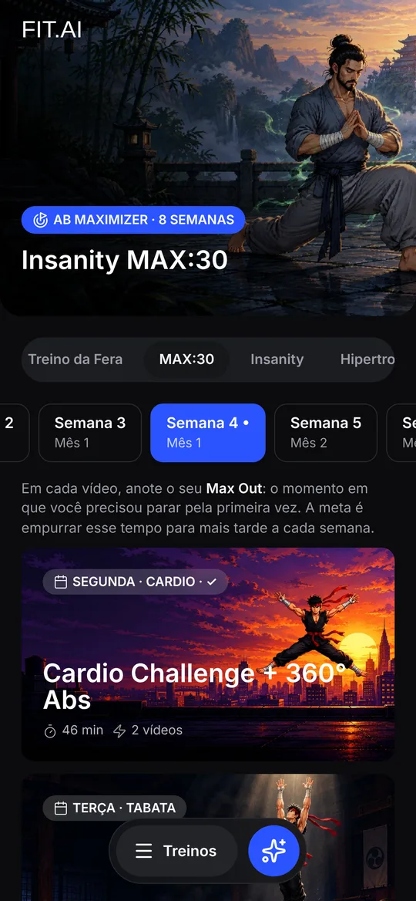
O Coach de IA monta o treino no chat e acompanha cada série. Cada série anotada vale XP na hora. As missões do dia renovam à meia-noite.
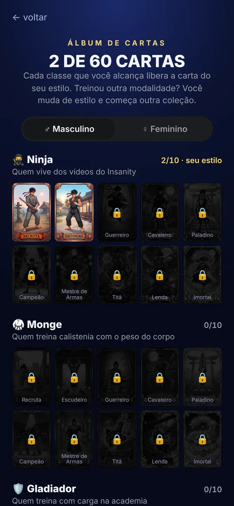
A cada 5 níveis seu personagem troca de classe e ganha uma carta nova para o álbum. São 10 classes e 60 cartas para colecionar.
Escolha seu caminho
O app olha o que você realmente treina e te dá o estilo que combina com isso. Cada estilo tem seu mestre e sua mestra.
De Recruta a Imortal
Escolha um estilo e passe pelas 10 classes. É o mesmo personagem que aparece animado no topo do seu app.
RecrutaNíveis 1 a 5
Todo dia tem quest
Treino do dia, água, abdômen e o desafio da semana. Cumpra todas e ganhe bônus de XP.
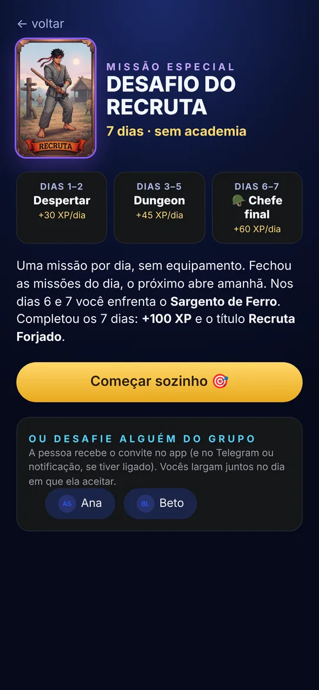
7 dias, sem academia: Despertar, Dungeon e o chefe final, o Sargento de Ferro. Quem completa ganha o título de Recruta Forjado.
Convide alguém do grupo, encarem os 7 dias juntos e acompanhem o progresso um do outro.
No grupo de amigos, quem fizer mais XP de segunda a domingo fica no topo. Zera toda segunda.
Do primeiro treino à maratona, de 100 m de subida ao Hyrox: cada marco acende um selo, vale XP e aparece sozinho no mural do grupo.
Seis trilhas, um XP só
Dá para trocar de trilha quando quiser, sem perder o XP.
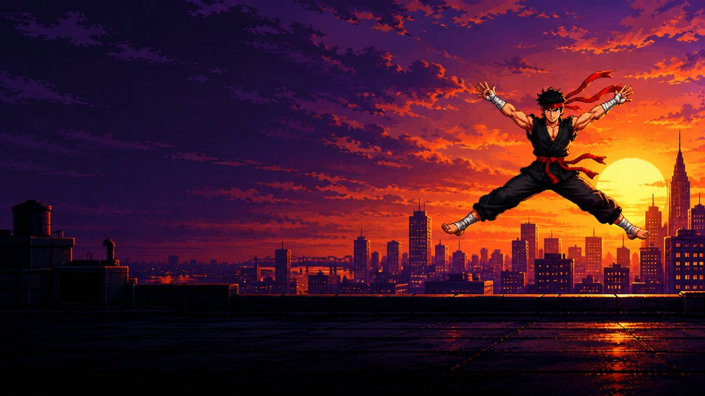
MAX:30 e depois o Insanity. Vídeos em casa, Max Out a cada treino.
O Coach monta a ficha, sugere a carga de cada dia e mostra o 1RM estimado.
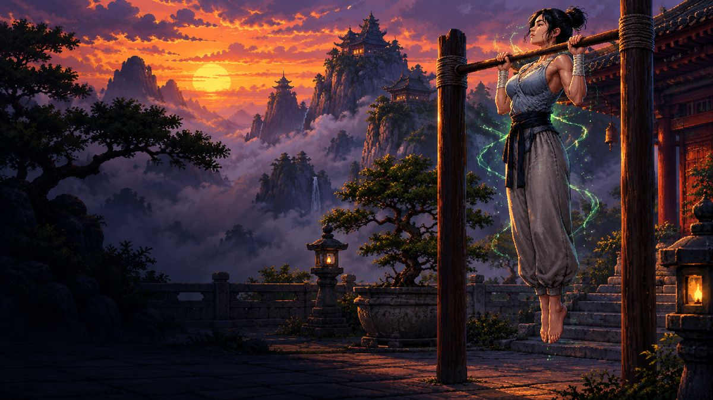
21 dias no seu nível e depois o Treino da Fera, com barra e paralelas.
Tire uma foto do quadro do box e o WOD vira treino, com cronômetro e PRs.
Mande o print do Strava ou do relógio: distância, ritmo e subida viram XP.
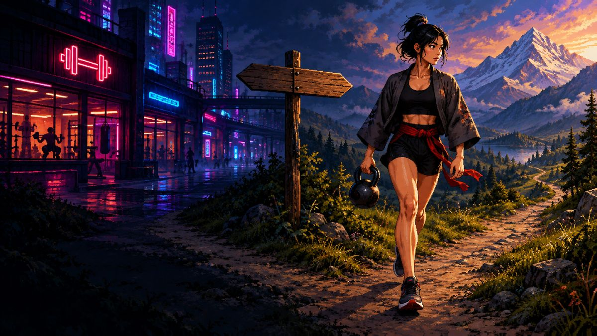
Corrida, força e vídeos combinados. Hyrox e corrida com obstáculos contam.
O mestre de verdade
Ele conversa com você, conhece os seus números e responde na hora: o treino de hoje, a carga certa, quanto falta para a próxima classe.
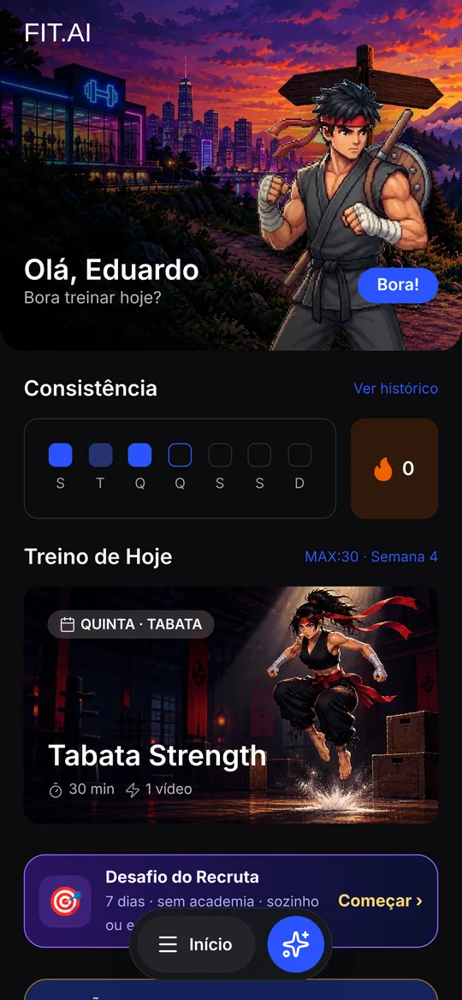
Por dentro do app
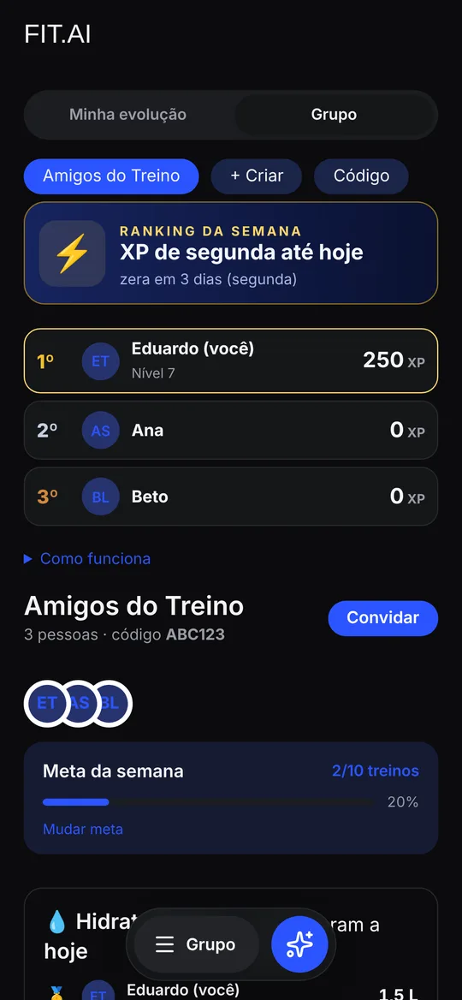
Antes de começar
Por enquanto, nada: o FIT.AI é gratuito. Crie a sua conta e comece pela trilha que quiser.
Não. O FIT.AI abre no navegador do celular ou do computador. Você entra com o Google ou com e-mail e senha, e tudo fica salvo na sua conta.
Cada série anotada, treino concluído, recorde, missão do dia, meta de água e semana batida vale XP. A cada 5 níveis o seu personagem troca de classe.
Pelo que você treina de verdade. Quem vive dos vídeos vira Ninja; calistenia, Monge; academia, Gladiador; corrida, Batedor; cross, Berserker. Quem mistura várias modalidades vira Ronin.
Mande o print da corrida, da pedalada ou da caminhada. A IA lê distância, tempo, ritmo e subida, você confere e a atividade vira XP.
Seus treinos aparecem só para os grupos em que você entrar. Peso, medidas e fotos de evolução ficam só com você.
Player 1, pronto?